Special Functions¶
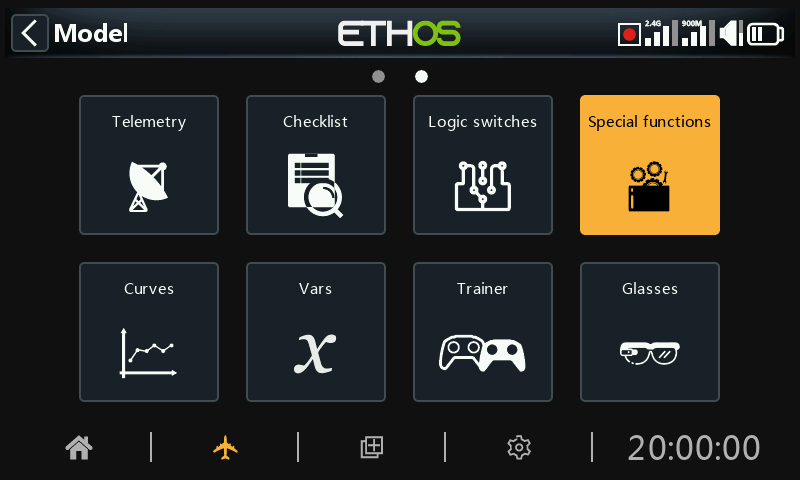
Special functions can be configured to play values, play sounds, etc. Up to 100 special functions supported.

There are no default special functions. Tap on the ‘+’ button in the initial empty menu to add a special function.
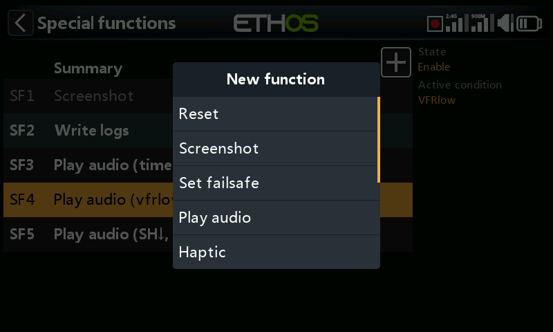
Once special functions have been defined, tapping on one will bring up the above popup menu, allowing you to edit, move, copy/paste, clone or delete that special function.
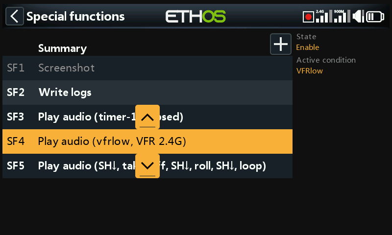
Selecting 'Move' will bring up arrow keys allowing the special function to be moved up or down.
Special functions¶
Currently the following special functions are supported:
- Reset
- Screenshot
- Set failsafe
- Play audio
- Haptic
- Write logs
- Play text (X20 Pro only)
- Go to page
- Lock touchscreen
- Load model
- Play vario
SF Common parameters¶
The following parameters are common to all Special Functions:
State¶
Enable or disable this special function.
Active condition¶
The special function may be 'Always on', or activated by switch positions, function switches, flight modes, logic switches, trim positions or flight modes.
To select the inverse of for example switch SG-up, if you long press Enter on the switch name and select the Negative check box in the popup the switch value will change to !SG-up. This means the special function will be active when switch SG is not in the up position.
Global¶
When selecting Global, the special function is added to all existing models and any new model created in the future. If an existing model already has the function the global function is added as a new function. Turning off the global function on any model removes the function from all models except the current model selected.
Global special functions are stored in the radio.bin file, while local ones are stored in the model file. Therefore they survive model deletion and have no concept of an ‘original’.
Action: Reset¶
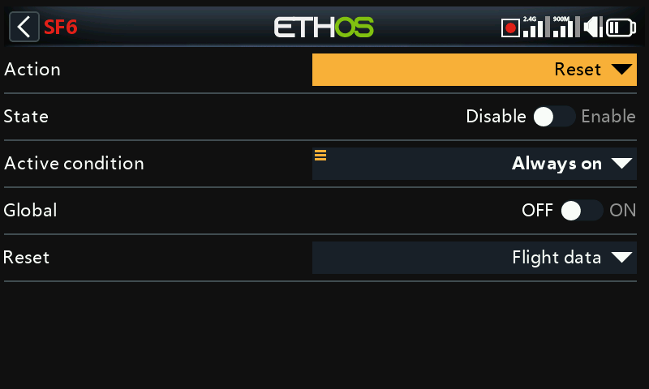
Please also refer to the ‘SF Common parameters’ above.
Reset¶
The following categories may be reset:
- Flight data: resets both telemetry and timers
- All timers: resets all 8 timers
- Whole telemetry: resets all telemetry values.
- Timer: individual timers may be reset
- Telemetry: individual sensors may be reset
Please note that ‘Reset: Flight data’ and ‘Reset: Whole telemetry’ and ‘Reset: Telemetry sensor’ will also clear any ‘sensor lost’ or ‘sensor conflict’ red dot alerts. Please refer to Sensor lost / conflict alerts.
Action: Screenshot¶
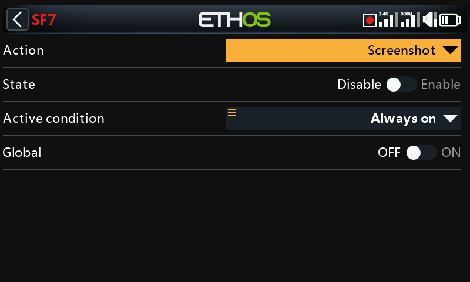
Will save a screenshot in .png format into the location:
SD Card (drive letter)/screenshots/ or
RADIO (drive letter)/screenshots/
Please also refer to the ‘SF Common parameters’ above.
Action: Set failsafe¶
Please also refer to the ‘SF Common parameters’ above.
Active condition¶
When asserted, all current channel values in the Channels menu are copied to the failsafe settings and then sent to the receiver, and then resent approximately every 10 seconds.
Please also refer to Failsafe Settings.
Module¶
Select whether to set failsafe via the internal or the external RF module.
Action: Play audio¶
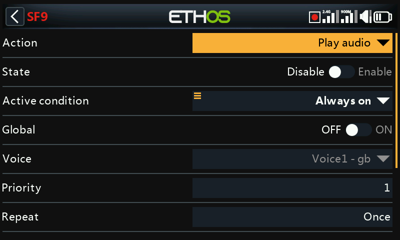
This special function is used to play audio files or the value of selected sources using a sequencer. A sequence of up to 100 ‘Play file’ and/or ‘Play value’ commands may be configured, which will be played in sequence.
Please also refer to the ‘SF Common parameters’ above.
Voice¶
Up to 3 voices may be configured in Ethos. Select the voice to be used for this ‘Play audio’.
Please refer to the Choice of Voices section in General for more details on configuring custom and system voices.
Priority¶
The ‘Play audio’ priority feature ensures that all ‘system alerts’ are played immediately.
The ‘Play audio’ entries have a default priority of 1 (default). Therefore all system alerts which have priority of 0 will stop everything which has a lower priority (i.e. a bigger number)
Repeat¶
The audio may be played once, or repeated at the frequency entered here, up to 10 minutes.
Skip on startup¶
If enabled, the speech text will not be played on startup.
Reset¶
When enabled, if a sequence is in (or reaches) a ‘Wait duration’ or ‘Wait condition’ state, the sequence will be reset. If the ‘Active condition’ is still True, then the sequence will start playing again.
Sequence¶
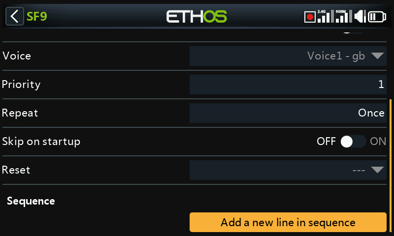
Please also refer to the ‘SF Common parameters’ above.
A sequence of up to 100 ‘Play file’ and/or ‘Play value’ commands may be configured, which will be played in sequence.
The available actions are:
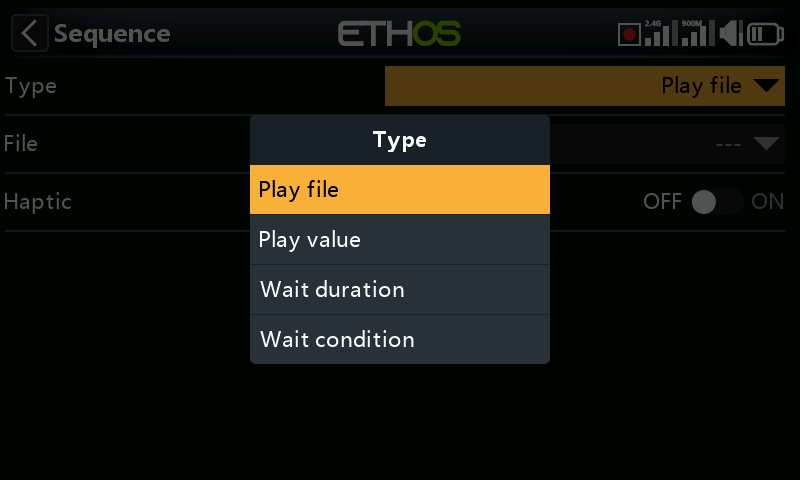
Play file¶
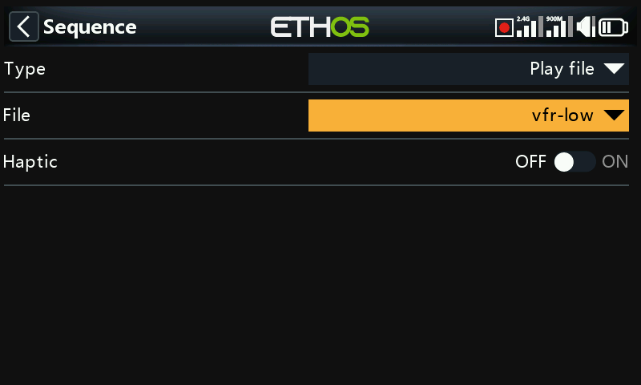
Play file will play the selected audio file.
Please refer to the ‘User sound files’ section in Choice of Voices for details on file location etc.
Play value¶
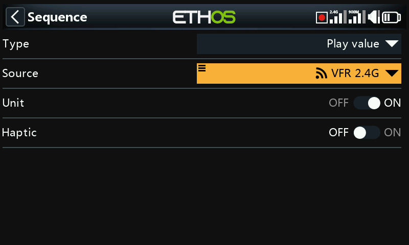
Play value will play the value of the selected source. The source may be from any of the following:
- Analogs, i.e. sticks, pots or sliders
- Switches
- Logic switches
- Trims
- Channels
- Gyro
- System clock (Time)
- Trainer
- Timers
- Telemetry
Wait duration¶
Wait duration will insert a delay for the time required, up to 10 minutes.
Wait condition¶
Wait condition will pause until the wait condition is satisfied.
Examples¶
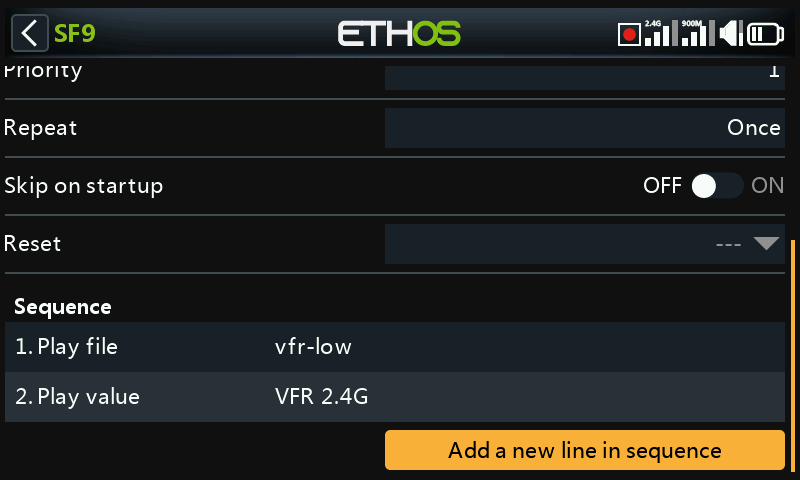
In the example above, the active condition is logic switch VFRlow. When it becomes active, ‘Play file’ is used to play a VFR low warning sound file called ‘vfrlow.wav’, which is then followed by ‘Play value’ playing the minimum VFR value recorded (from Telemetry).
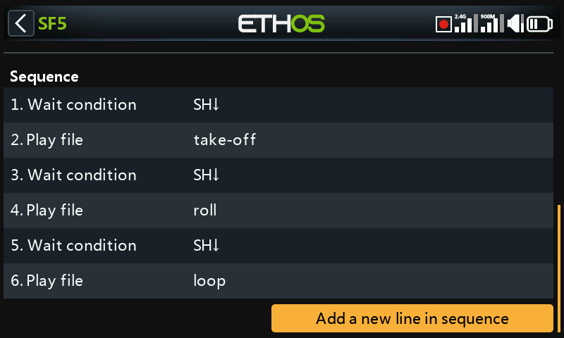
This example shows the use of ‘Wait condition’ to pause the sequence until switch SH is moved to the down position.
Sequence management¶
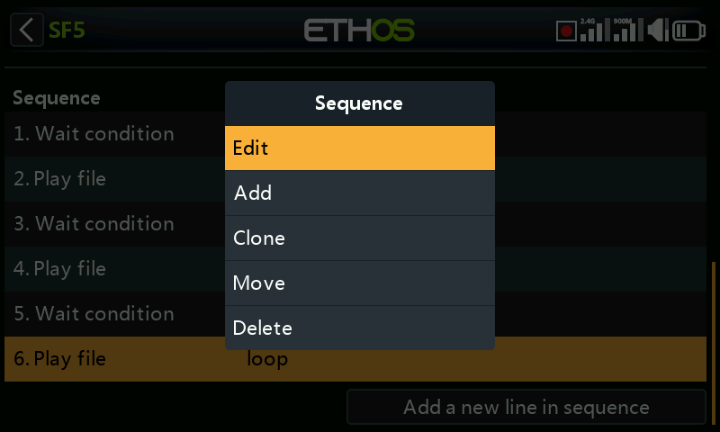
Tapping on a sequence line will bring up a dialog allowing you to edit the line, add a new line, move the line up or down, or to delete the line.
Action: Haptic¶
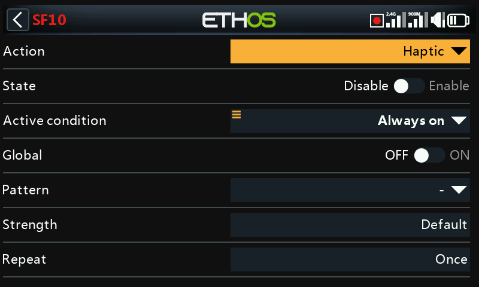
This special function assigns haptic vibration.
Please also refer to the ‘SF Common parameters’ above.
Pattern¶
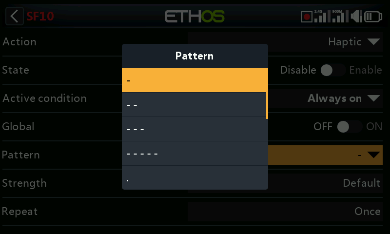
Sets the pattern of the haptic. Options are single, double, triple, quintuple and very brief.
Strength¶
Select the strength of the haptic vibration, between 1 and 10. The default is 5.
Repeat¶
The haptic may be executed once, or repeated at the frequency entered here.
Select haptic motors¶
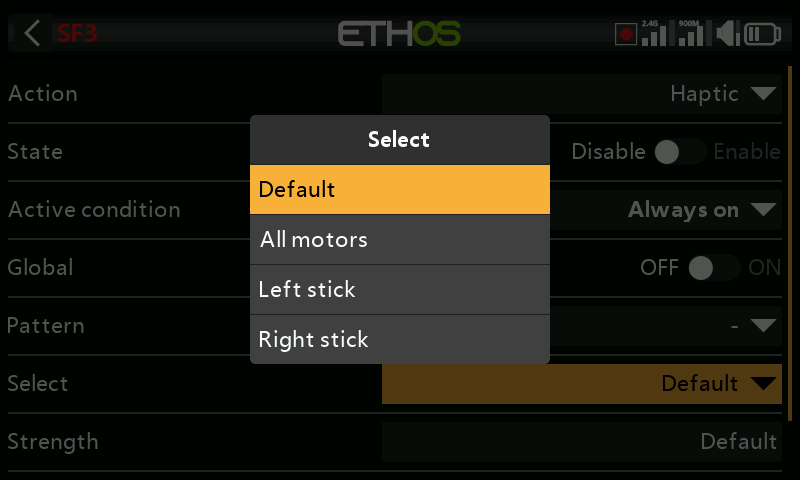
The X20 Pro AW and X20RS have haptic feedback motor options for the gimbal sticks.
Note that X20 Pro and X20R can be upgraded by fitting MC20R haptic gimbals. Please refer to the ‘Enabling haptic gimbal upgrades’ to enable the option.
You can select between:
- Default (internal haptic)
- All motors
- Left stick haptic
- Right stick haptic
Action: Write Logs¶
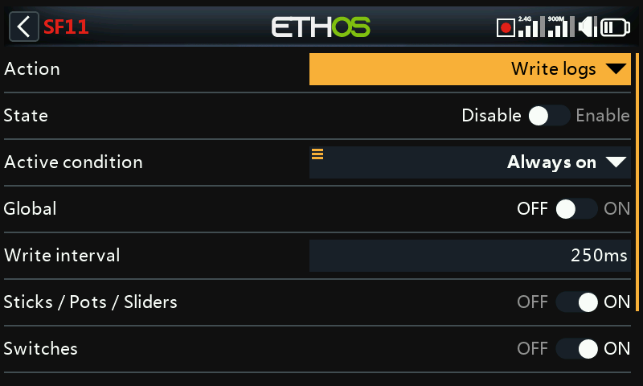
This special function is used to configure periodic logging of sticks/pots/sliders, switches, logic switches and channel values to a .csv file.
Log files are stored in a ‘.csv’ format in the ‘Logs’ folder on the SD card or eMMC. The RTC time and date are logged with the data, and are important to make sense of the data by separating the log data into sessions.
Please also refer to the ‘SF Common parameters’ above.
Write Interval¶
The logs write interval is user adjustable between 100 and 500ms.
Sticks/Pots/Sliders¶
Enables logging of Sticks/Pots/Sliders.
Switches¶
Enables logging of Switches.
Logic Switches¶
Enables logging of logic switches.
Channels¶
Enables logging of channels sent to the RF module.
Log viewer¶

To view log files, navigate to the /Logs folder on eMMC or the SD card with File Explorer, then tap on the desired log file and select open.
- The log file will be read into memory, but can be cancelled while reading.

- Select the channels to be viewed on the RHS. In this example the Throttle and Elevator channels have been selected. RSSI is selected by default.
The [DISP] button moves the focus to the first button in the right hand column.

- The display can be panned with the rotary encoder or by swiping left or right. The above screenshot was panned to the left compared to the previous one.

- The display can be zoomed in or out by rotating the rotary encoder while holding down the page key.
Action: Play Text (X20 Pro only)¶

This special function utilizes an internal hardware TTS (Text-To-Speech) processor to generate spoken text from the user specified text string, rather than playing previously prepared .wav files.
Please also refer to the ‘SF Common parameters’ above.
Text¶
The user specified text string to be converted to speech and played. Using all capitals will have the result of spelling out the word letter by letter, for example ‘OFF’ will say O-F-F. Using lowercase tells TTS that you want to say the word ‘off’.
Repeat¶
The speech text may be played once, or repeated at the frequency entered here.
Skip on startup¶
If enabled, the speech text will not be played on startup.
Action: Go to screen¶
This special function will switch the display to a selected screen.
Please also refer to the ‘SF Common parameters’ above.
Screen¶
Select the radio screen to be displayed.
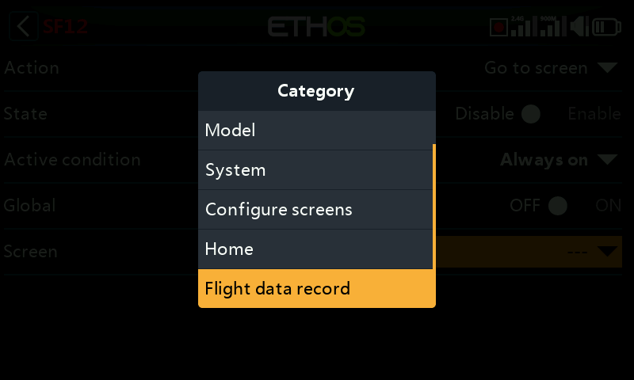
The destination screen can be any Model, System or Configure Screens page, or the Home page, or the ‘Flight data record’ for the chosen receiver.
Action: Lock touchscreen¶
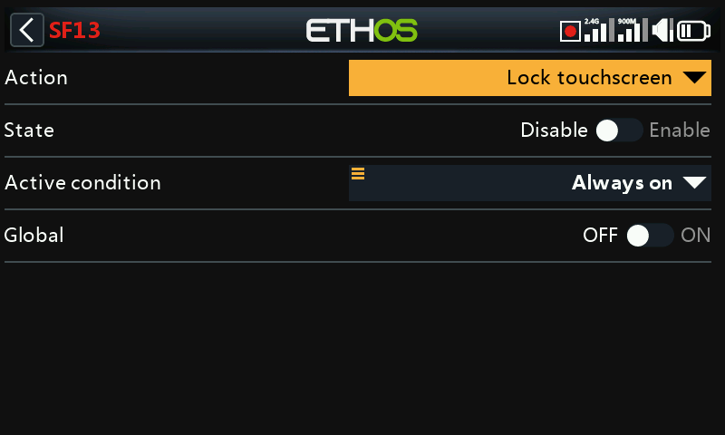
This special function will lock the touchscreen to prevent inadvertent operation.
Please note that ‘lock touchscreen’ is also available by pressing [ENT] and [Page] simultaneously for 1 second from the Home screen.
Please also refer to the ‘SF Common parameters’ above.
Action: Load model¶
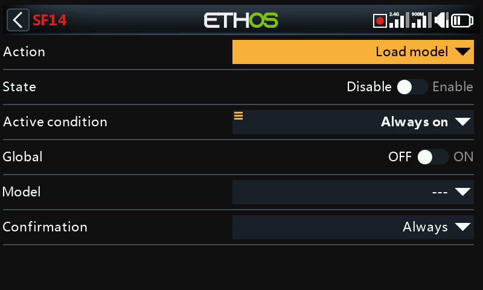
This special function will load a specified model when the ‘Active condition’ is met.
Please also refer to the ‘SF Common parameters’ above.
Model¶
Select the desired model to be loaded.
Confirmation¶
Select whether confirmation of the model load is required.
Action: Play vario¶
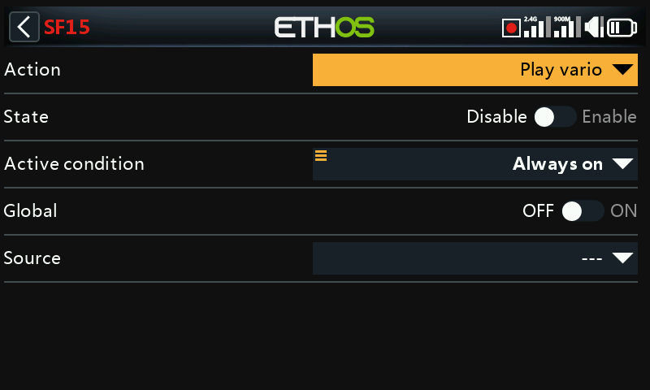
Allows a source for the vario to be selected.
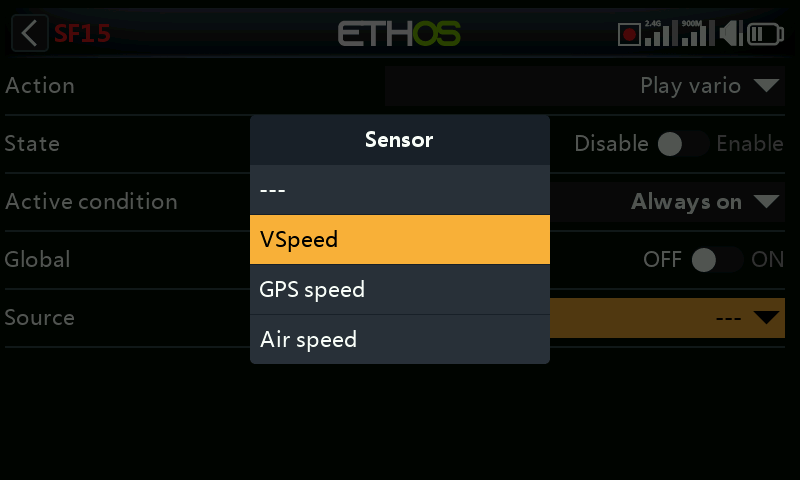
The default is normally the VSpeed sensor on FrSky varios, but any sensor with units of m/s can be used.
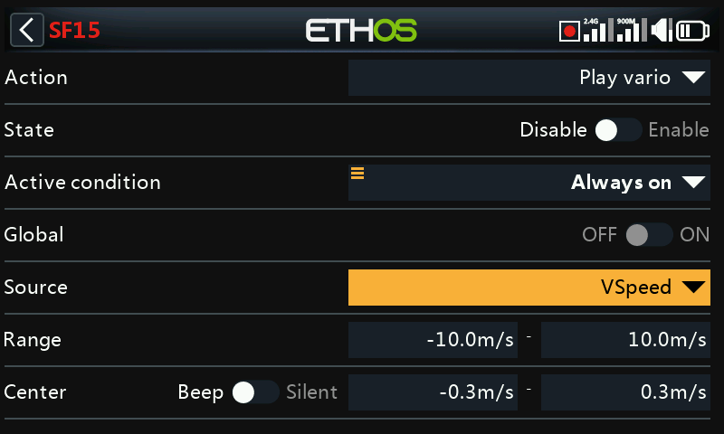
Once the source has been selected, the Range and Center parameters appear.
Range¶
The default rate of climb or descent is +/- 10m/s, but may be increased up to +/- 100m/s.
When the climb rate is above the Center value below, the pitch of the Vario beeps increases linearly until the maximum Range value is reached. The tone pitch at maximum climb rate can be configured in the Vario section of the Audio settings.
The tone is continuous when the climb rate is falling. The pitch of the tone decreases linearly until the minimum Range value is reached.
Center¶
The default range defining a climb rate of zero is +/- 0.3m/s, but may be increased up to +/- 2m/s.
The pitch of the Vario beeps is steady when the climb rate is between these center values. The tone pitch when the climb rate is zero can be configured in the Vario section of the Audio settings.
These beeps may be silenced by switching from ‘Beep’ to ‘Silent’.